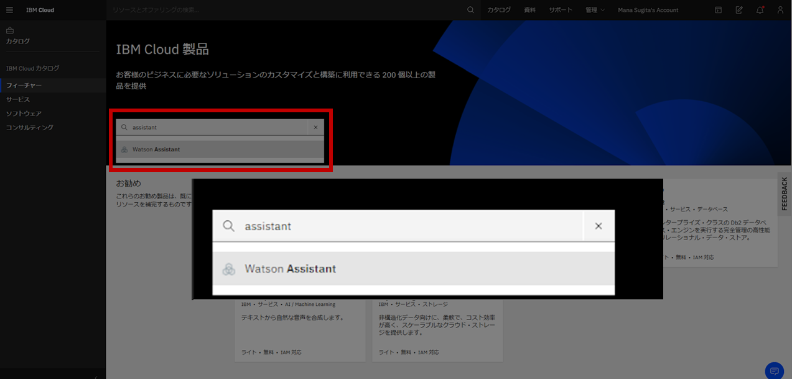

まずは、チャットボットを構築する環境を準備していきましょう。
Watson Assistant ツールを起動する
- IBM Cloud ライトアカウントで [ ダッシュボード ] 画面を開きます。
ダッシュボード 画面
- 画面右上の「カタログ」リンクを押下します。
IBM Cloud 製品 画面
- 検索窓に「assistant」と記入します。
- サジェストで表示された「Watson Assistant」を押下します。

Watson Assistant 画面
- 作成するインスタンス情報を設定します。
- 画面を「リソースの構成」部分までスクロールします。
- サービス名を任意の名前に変更します。
例）handson-20201026
- 画面右側の「サマリー」から [作成] ボタンを押下します。
- [作成] ボタン押下から数秒後に、サービス名が表示されている画面へリダイレクトします。
リソース 画面
- [Watson Assistant の起動] を押下します。
- Watson Assistantが起動します。
Skillを作成する
つづいて、「Skill」という作業スペースを作成します。
※このskillには一意のIDが割り当てられ、アプリからこのAPIを呼び出す際に利用されます。
Assistants 画面
- 画面左側にある二つ目のアイコンを押下します。
- Skills画面に遷移します。
- [Create skill] ボタンを押下します。
Create a skill画面
- Select skill typeにて「Dialog skill」を選択し、 [Next] ボタンを押下します。
Create dialog skill画面
- 以下の項目を記入します。
- Name：寿司Bot
- Language：Japanese
※Descriptionは書かなくても問題ないです。
- [Create dialog skill] ボタンを押下します。
- 以下のような画面に遷移したら、準備完了です。
今回は「お寿司の出前対応チャットボット」ということで
以下のような対話ができるチャットボットを構築していきます。
会話の階層イメージは以下の通りです。
1階層：ユーザーから出前の依頼を受ける
2階層：お寿司のメニューを聞く
3階層：宅配の希望時間を聞く
では、早速チャットボットを作っていきましょう。
チャットボットの構築手順は以下の通りです。
まずはIntentsを作成し、「出前をお願いしたい」という意図をWatsonに学習させていきます。
Intents画面
- [Create Intent] ボタンを押下します。
- 「Intent name」に「出前依頼」と入力し、[Create Intent] を押下します。
- 「User example」に出前を依頼するときの例文を、出来るだけ多く登録していきます。
※ここが賢いチャットボットを作る際のポイントとなる作業です。
※ [add example] ボタンを押下すると、例文が登録できます。
- ある程度例文を登録できたら、画面左上の [←] を押下して前の画面に戻ります。
これでIntentsの登録は完了です。
つづいて、Watsonにキーワードを学習させていきます。
今回学習させるEntitiesは以下の二つです。
- お寿司のメニュー
- 時間（予約時間を認識させるために使います）
お寿司のメニューを登録
今回、皆さんがチャットボットを構築するお寿司屋さんで販売しているメニューは以下の３つです。
このメニューをWatsonに学習させていきましょう。
Intents画面
- 画面左側の [Entities] リンクを押下します。
My entities画面
- [Create entity] ボタンを押下します。
- 「Entity name」に「お寿司のメニュー」と記入し、 [Create entity] を押下します。
- 「Value」に「松」、「Synonym」に「松のセット」「豪華なやつ」など、松のセットを表すキーワードを入力していきます。
- [ Add value] を押下し、入力した内容を登録します。
- その他のメニューの「竹」「梅」についても、以下の図を参考に同じように登録していきます。

sys-timeを使って時間を認識させる
Watsonに予約時間を認識させるために、デフォルトで用意されているSystem entitiesの中から「sys-time」entityの設定を「on」にします。
My entities画面
- 画面左上の「←」を押下し、前の画面に戻ります。
- 画面左側の「System entities」リンクを押下します。
System entities画面
- 「＠sys-time」のStatusを押下し「On」にします。
これで会話フローを作る材料が揃いました。
いよいよDialogで会話フローの組立てをしていきます。
Intents、Entitiesを使って、Dialogを構築していきます。
以下の３ステップで会話フローを構築していきましょう。
1階層：ユーザーから出前の依頼を受ける
2階層：お寿司のメニューを聞く
3階層：宅配の希望時間を聞く
第1階層
まずは、「1階層：ユーザーから出前の依頼を受ける」フローを作っていきましょう。
対話イメージで表すと、以下図の黄色枠の部分に当たります。
System entities画面
- 画面左側の [Dialog] リンクを押下します。
Dialog画面
※四角いまとまりのことを「ノード」と言います。
※デフォルトで「ようこそ」と書かれている「Welcomeノード」と、意図しない入力値に返答する「Anything_else」ノードがあります。
- Welcomeノードの三点リーダーを押下し、 [Add node below] を選択します。
- WelcomeノードとAnything_elseノードの間に、新しいノードが作成されました。
- 新しく作成されたノードの「If assistant recognizes」から [# intents] > [#出前依頼] を選択します。
- 「Assistant responds」の text に「ご利用ありがとうございます。お好みのメニューをお申し付けください。」と記入し、Enterを押下します。
ここまでで第1階層の実装が完了しました。
「Try it」機能を使って会話フローを確認してみましょう。
- 画面右上の [Try it] を押下します。
- 入力フォームに「出前お願いしたいんだけど」と入力をしてみましょう。
- Watsonから好みのメニューを聞かれたら成功です！
第2階層
つづいて、「2階層：お寿司のメニューを聞く」フローを作っていきましょう。
対話イメージで表すと、以下図の黄色枠の部分に当たります。
Dialog画面
- 「出前依頼」intentを設定しているノードの三点リーダーを押下し、 [Add child node] を選択します。
- 新しく作成されたノードの「If assistant recognizes」から [@ entities] > [@お寿司のメニュー] > [any] を選択します。
- 「Assistant responds」の text に「かしこまりました。ご希望のお届け時間はいつですか？」と記入し、Enterを押下します。
ここまでで第2階層の実装が完了しました。
「Try it」機能を使って会話フローを確認してみましょう。
- 画面右上の [Try it] を開き、画面上の [Clear] を押下します。
- 入力フォームに「出前お願いしたいんだけど」と入力します。
- Watsonからメニューを聞かれたら、お好きなメニューを入力してみましょう。
- Watsonから希望の宅配時間を聞かれたら成功です！
第3階層
最後に、「3階層：宅配の希望時間を聞く」フローを作っていきましょう。
対話イメージで表すと、以下図の黄色枠の部分に当たります。
Dialog画面
- 「お寿司のメニュー」entitiyを設定しているノードの三点リーダーを押下し、 [Add child node] を選択します。
- 「お寿司のメニュー」entitiyを設定しているノードの下に、新しいノードが作成されました。
- 「If assistant recognizes」から [@ entities] > [@sys-time] > [any] を選択します。
- 「Assistant responds」の text に「かしこまりました。本日@(sys-time)にお届けします。」と記入し、Enterを押下します。
遂に第3階層の実装も完了しました。
「Try it」機能を使って会話フローを確認してみましょう。
- 画面右上の [Try it] を開き、画面上の [Clear] を押下します。
- 入力フォームに「出前お願いしたいんだけど」と入力します。
- Watsonからメニューを聞かれたら、お好きなメニューを入力します。
- Watsonから希望の配達時間を聞かれたら、お好きな時間を入力してみましょう。
- 先ほど、「Assistant responds」のTextに登録した文章が返ってくれば成功です！
これでチャットボットの完成です！
お疲れ様でした！